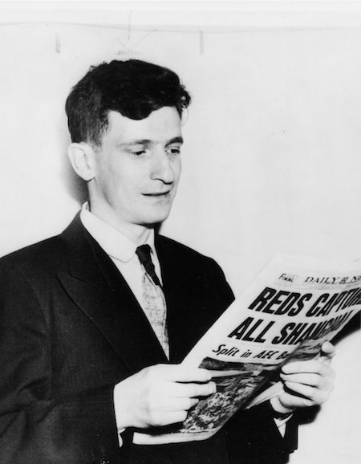

David Bohm was born on December 17, 1917 during some of the hardest economic times in the United States. He was always a dreamer and a scientist at heart, hoping that his studies could cure the inequality he witnessed growing up.
The Life and Work of David Bohm
One of the most influential theoretical physicists of the 21st century
My spiritual son
- Albert Einstein
My science guru
- The 14th Dalai Lama
Beginnings in Physics
1917
1935

Going against his father's original wishes of taking over the family business, Bohm heavily pursued mathematics and physics in highschool, and was addmitted to Penn State in 1935.
Bohm graduated from Penn State in 1939 with a Bachelor's of Science in physics.
Work at the University of California, Berkeley
1941

Bohm did exceptionally well in Penn State and quickly was invited to pursue his master's and PhD at the California Institute of Technology.
However, it wasn't long before his work and impressive intellect caught the eye of another physicist, and in the Spring of 1941 Robert Oppenheimer—the father of the atomic bomb—invited Bohm to complete his PhD at the University of California, Berkeley.
1943
As a member of Oppenheimer's team, Bohm studied collisions between protons and deuterons that would prove extremely valuable to the United States' building of the atomic bomb.
When Oppenheimer was chosen to lead the project at Los Alamos, he wished to take Bohm with him.
However, Bohm had previously joined a communist party for a mere 9 months, but that was enough for the U.S. to ban Bohm from joining Oppenheimer in fear that Bohm was a communist spy.
The government quickly classified his work and, unable to continue his thesis, he quickly was granted his PhD in theoretical physics in 1943.
Work at Princeton University
1947
In 1947, Bohm became an assistant professor of theoretical physics at Princeton University, working closley with amazing physicists such as Albert Eintstein.
During his time at Princeton he performed groundbreaking research on multiple quantum mechanical concepts, especially including work on plasma in metals.
1950

However, things took a turn for the worst in 1950 when he was arrested for his past communist ties.
That same year he was forced to flee the country after he refused to testify against his colleagues.
Work at the University of São Paulo
1951
1952

A year later in 1952, he published his paper A Suggested Interpretation of the Quantum Theory in Terms of "Hidden" Variables, which went against the orthodox nature of quantum mechanics and general relativity.
Angry at these 'radical' theories Bohm expressed and unable to disprove him, Oppenheimer ordered all physicists to simply turn a blind eye to Bohm's Hidden Variables theory stating,
If we cannot disprove Bohm, then we must ignore him.
And they followed suit, with Einstein calling his work,
A physical fairy tale for children,
and Neils Bohr simply saying,
Very foolish.
Work at the Israel Institute of Technology
1955
After the disheartening response he recieved from his Hidden Variables theory, Bohm moved to Israel in hopes of pursuing something greater.
He acquired a posititon as a research fellow at the Technicon—or Israel Institute of Technology–in Haifa, Israel.
1957
While working there, he took student Yakir Aharonov under his wing. Together they started working on the Aharonov-Bohm effect which is, as defined on Wikipedia is, "A quantum mechanical phenomenon in which an electrically charged particle is affected by an electromagnetic potential, despite being confined to a region in which both the magnetic field and electric field are zero."
During his last year at the Technicon, Bohm published his second book Causality and Chance in Modern Physics, which details Bohm's insight into the meaning of the quantum theory and suggests ways of extending the theory into new directions.
Work in England
1957
The University of Bristol
In 1957, Bohm decided to completely leave his Hidden Variables theory behind, accepting the fact that physicists simply could not budge from their orthodox views.
He moved to the United Kingdom for a fresh start and recieved a research fellow position at the University of Bristol.
He brought his student Yakir Aharonov to the University of Bristol to finish his PhD, and together they continued work on quantum mechanical interpretations.
1959
1960
In 1959, Aharonov and Bohm published their work which they called the Aharonov-Bohm effect.
That same year, Bohm's wife starts to read a book by Jiddu Krishnamurti, a famous Indian philosopher. Bohm was extremely moved by his writing, and especially interested in his ideas of the observor and the observant.
Bohm saw the parallels between the observor and observant and undivided wholeness in quantum mechanics. It seemed that this sparked Bohm's original goal of finding a new order of physics that essentially combined general relativity and quantum theory. In 1960, Bohm started to develop his concepts of implicate and explicate orders, which describes two different frameworks for understanding the same phenomenon or aspect of reality.
1961
1965
1972
University of London's Birkbeck College
In 1961 Bohm moved to London to take a position at the University of London's Birkbeck College.
In 1965 he published The Special Theory of Relativity which explores Einstein's theory of relativity.
In 1972, something particularly interesting happened that amazed Bohm. A graduate student used computer programs to generate data that supported Bohm's hidden variables theory. It immediately sparked his interest in continuing with his Hidden Variables theory again and that same year he started to work on an idea called quantum potential.
1980
A few years later in 1980, Bohm published Wholeness and the Implicate Order which veered from the technical mechanics of his theories to a broader, philosophical sense of his work.
This book and its ideas particularly captured the interest of the public, with the Sunday Timeswriting,
[It] has deeply important philosophical implications [...] It provides a worldview that gives a coherent understanding of physical phenomena...
1987
Philosophical Work and Studies
1985
With both Wholeness and the Implicate Order and Science, Order, and Creativity, it was quite obvious that Bohm was starting to lean towards a philosophical approach to his work.
However, his philosophical interests only deepend as he grew closer to Krishnamurti. They regularly discussed ideas of wholeness, human thought, love, conciousness, and the universe, amongst many other ideas.
Together, they published one of their most famous collaborative projects, The Ending of Time in 1985. Their ideas and conversations were detailed in a myriad of books and publications over the following two decades inclding, On Dialoge, The Wholeness of Life, The Limits of Thought, and The Future of Humanity.
1992
Bohm speculated dropping theoretical physics altogether, but physicist Basil Hiley, who was a long time colleage of Bohm, convinced him to continue pursuing new, trailblazing ideas within physics.
Hiley once again helped rekindle Bohm's interest in pursuing new theories, and on October 27th, 1992, Bohm called his wife excitedly saying he had a great day and felt he was "on to something big".
However, Bohm had a heart attack on his way home, and unfortunately never got to tell his wife what had excited him that day.
Hiley published their book, The Undivided Universe: An Ontological Interpretation of Quantum Theory in 1995.

During an interview, Bohm stated that he originally went into the sciences hoping to fix humanity's problems. However, he realized that science itself had many problems, and knew that science may not be the answer. Perhaps this is what drew him so much to philosophy and theories of the human conciousness.
He expressed that he always had a theory of an underlying variable within physics that both effected everything and was part of everything, something that was possibly the essence of the universe itself. That may have been why he was so dedicated to his Hidden Variables theory. Regardless, the theory has shifted the focus of quantum theory and mechanics, and it is still being pursued by physicists today.
Bohm was an amazing and awe-inspiring physicist. However, he was more than just a physicist, and every publication he has put forth has shown his radical way of thinking.
He was ahead of his time, and continues to inspire scientists and philosophers alike to this day. As he so eloquently put it,
The ability to perceive or think differently is more important than the knowledge gained.